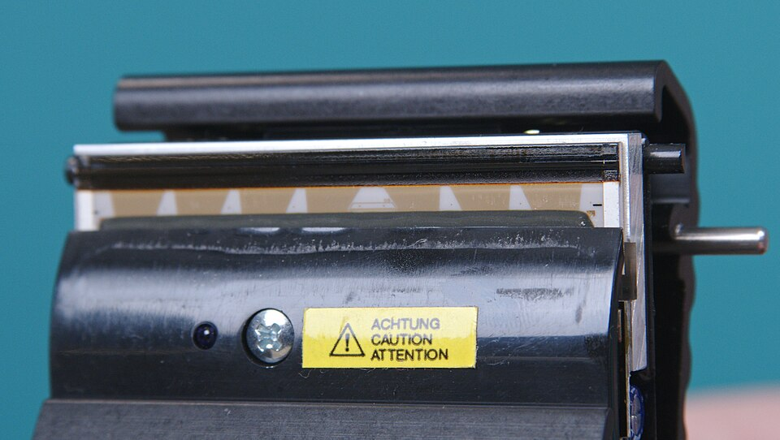

Thermal printheads, media sensing and barcode quality
Follow a moving label past the sensor and printhead, then explain print defects using dot pitch, heat and contrast.
How one row of heaters makes a label
The printhead has a line of individually controlled resistive elements. The platen supports and advances the label. As the stock advances, the controller pulses a different set of elements to draw each row. Direct-thermal stock darkens where heat is applied. A thermal-transfer printer heats a ribbon and transfers its coating to a compatible label. The process depends on heat, contact, speed and media. Zebra ZD421-family media and ribbon guidance.

Photo by Gravis, scaled with labels. Original photograph · CC BY-SA 4.0.


Photo by Gravis, scaled with labels. Original photograph · CC BY-SA 4.0.

Watch the media path and cleaning points. Identify where the head applies heat, where the roller presses the stock and where the sensor reads the edge or gap. Zebra's direct-thermal maintenance demonstration.
Use the physical scale to explain the defect
At 203 dots per inch, one dot is about 0.125 mm across. A 3-dot bar is roughly 0.375 mm wide before heat spread and movement errors. The desired width in a barcode specification must be translated to whole printer dots. On each row, adhesive or a failed element in one position can leave a white stripe that follows the feed direction. A mark once per roller turn can instead repeat at intervals around the circumference. Reprinting with fresh stock at matched settings helps separate the media, roller and head paths.
A label gap or black mark positions the job. On many desktops, a gap sensor detects transmitted light through the liner, while a black mark sensor uses reflected light. The calibration depends on the exact sensor, position and stock. A shifted starting position or skipped blank label may come from sensing even when the printed marks look clean. Zebra media sensing reference.
Checking one scan and measuring barcode quality
Darkening a label can raise contrast but can also spread the bars into narrow spaces. A decoder can read a symbol that is marginal on another scanner or at another angle. A verifier measures properties such as contrast and symbol defects under a specified method and reports a grade. A shop can record successful reads as a functional acceptance test and agree separately if formal verification is required. GS1 barcode verification guidance · P103 repair and compare real labels.